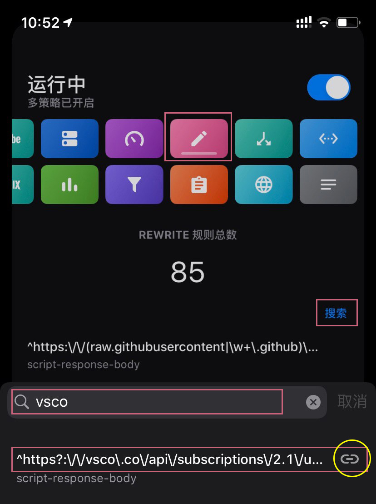
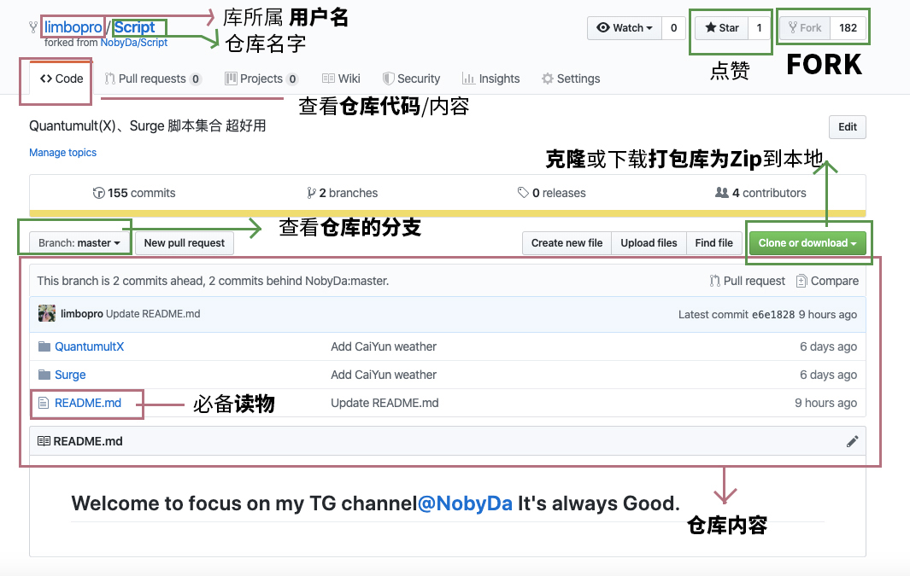
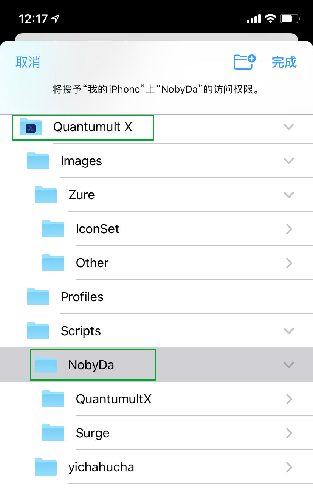
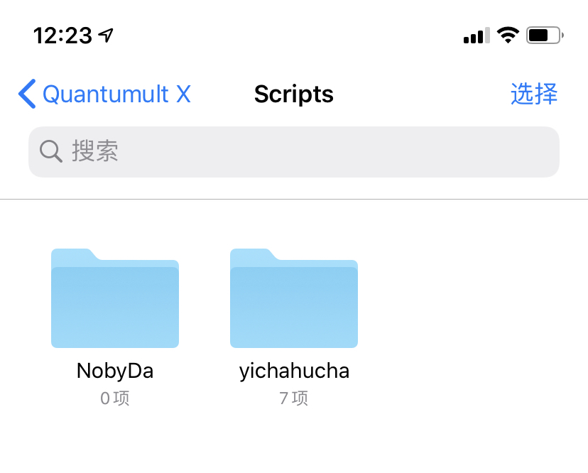
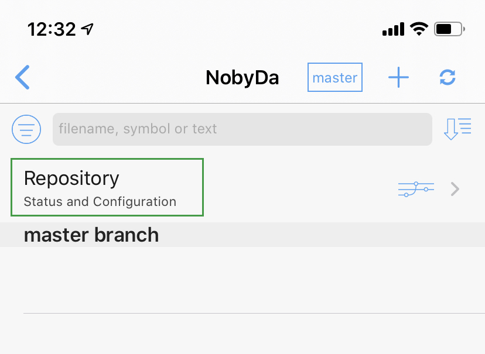
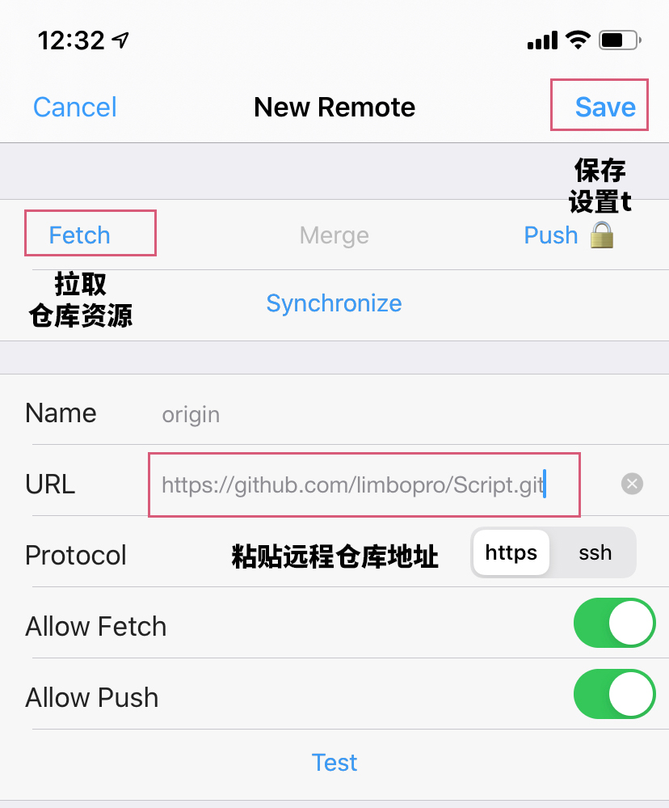
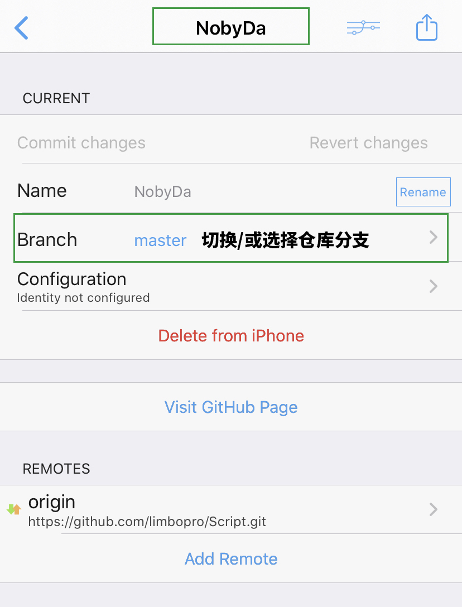
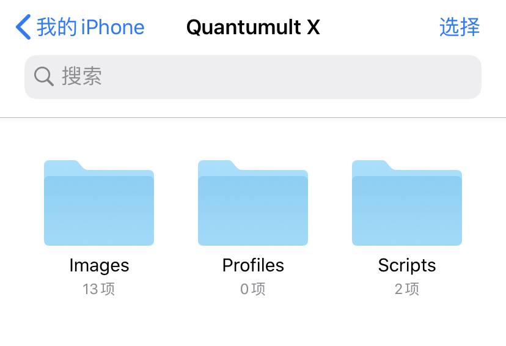
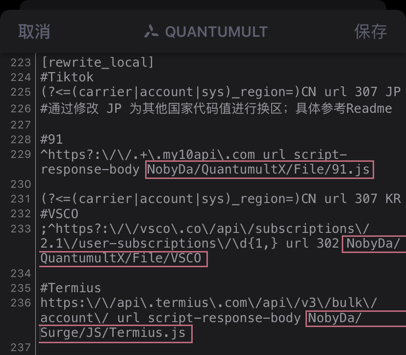
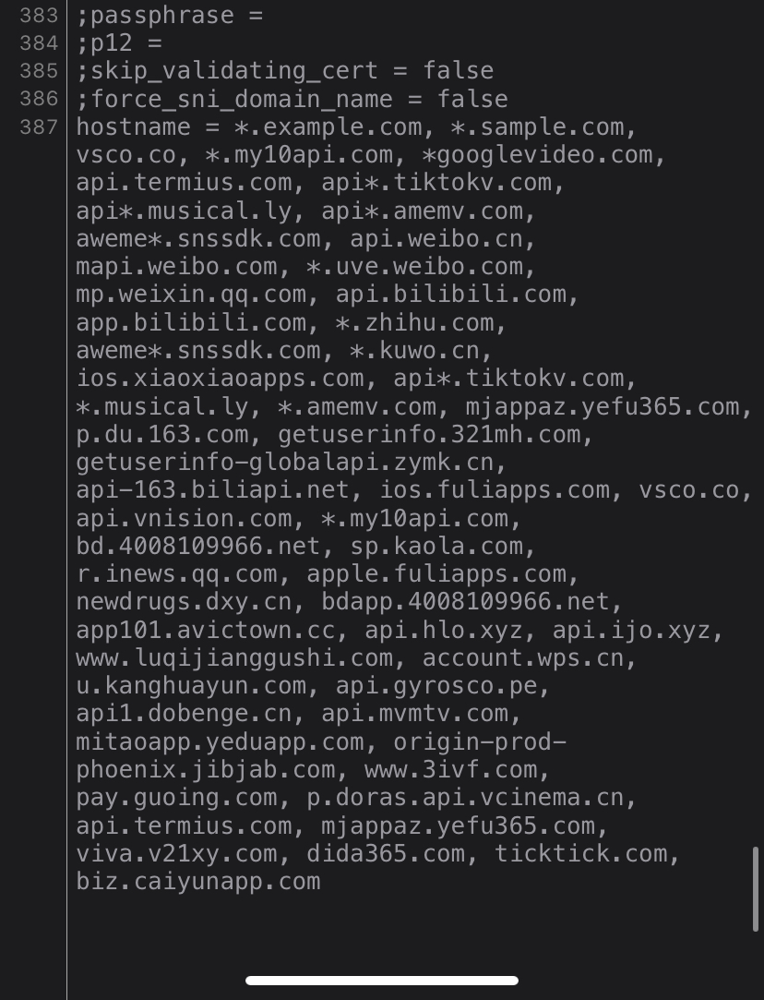

<?xml version="1.0" encoding="UTF-8"?>
<rss version="2.0"
xmlns:content="http://purl.org/rss/1.0/modules/content/"
xmlns:dc="http://purl.org/dc/elements/1.1/"
xmlns:slash="http://purl.org/rss/1.0/modules/slash/"
xmlns:atom="http://www.w3.org/2005/Atom"
xmlns:wfw="http://wellformedweb.org/CommentAPI/">
<channel>
<title>毒奶博主丨欢迎使用代理访问本站。 - Github</title>
<link>https://limbopro.xyz/tag/Github/</link>
<atom:link href="https://limbopro.xyz/feed/tag/Github/" rel="self" type="application/rss+xml" />
<language>zh-CN</language>
<description></description>
<lastBuildDate>Wed, 30 Oct 2019 10:16:00 +0800</lastBuildDate>
<pubDate>Wed, 30 Oct 2019 10:16:00 +0800</pubDate>
<item>
<title>Working Copy丨将Github仓库内容同步到手机文件（iOS）并配置 Quantumult X 本地脚本（解锁Tiktok/VSCO/Termius等）11.26 更新</title>
<link>https://limbopro.xyz/archives/workingcopy.html</link>
<guid>https://limbopro.xyz/archives/workingcopy.html</guid>
<pubDate>Wed, 30 Oct 2019 10:16:00 +0800</pubDate>
<dc:creator>毒奶</dc:creator>
<description><![CDATA[Working Copy, Git on iOS主理人说到底是引用远程JS脚本资源还是本地JS脚本资源，你开心就好。Working 推荐评价我也不是很擅长Git，更不是程序员，入门级需求，所以W...]]></description>
<content:encoded xml:lang="zh-CN"><![CDATA[
<p>Working Copy, Git on iOS</p><h2>主理人说</h2><p>到底是引用<code>远程JS脚本资源</code>还是<code>本地JS脚本资源</code>，你开心就好。</p><p><strong>Working 推荐评价</strong><br>我也不是很擅长<a href="../../../archives/3856.html#Github/Git%E6%B7%B1%E5%85%A5%E5%AD%A6%E4%B9%A0%E8%B5%84%E6%96%99">Git</a>，更不是<code>程序员</code>，入门级需求，所以<code>WorkingCpoy</code>到底怎么样？目前就我的需求来说，<code>Fetch</code>（免费版本可用，<code>PUSH</code>需要订阅付费才能使用）远程仓库的更新到<code>手机本地</code>真的挺实用的，怎么夸呢，简直好用之极。</p><p>本文隶属于 <a href="../../../category/tools/index.html">实用工具</a> / <a href="../../../category/ssr/index.html">科学上网 </a>分类，点击分类名称可以查看更多相关文章；</p><p>[post cid="3629" cover="https://limbopro.xyz/usr/uploads/2019/11/540587537.png"/]</p><p>以上。</p><h2>操作前必看</h2><p>*以下教程中，QuantumultX 默认模式使用<code>规则分流</code>模式，请不要<code>全部代理</code>或<code>全部直连</code>模式；（进入<code>QuantumultX</code>，点击右下角三菱<code>按钮</code>-点击右上角<code>...</code>更多按钮-模式-选择<code>规则分流</code>）。</p><p>*更多大家超关心的<code>实用教程</code>在本文末尾<code>附注</code>部分，例如备份/抓包<code>IPA</code>，QuantumultX 进阶玩法等；</p><p><strong>25.11.2019 更新建议</strong></p><p>Quantumult X app 1.0.3 版本已来；已经阉割远程调用脚本（Scripts）的功能回归（但需要配置<code>设备ID</code>才可正常使用）；本地脚本在 1.0.3 更新后依然可用；</p><h2>26.11.2019 QX-1.0.3</h2><p></p><p>来，使用<code>WorkingCopy</code>App燥起来！QuantumultX 1.0.3 本地，远程引用脚本均可用，畅快解锁各种VIP会员（VSCO/无需拔卡看Tiktok/WPS/Terimius/Rewrite去广告/等等）；</p><h3>教程概要</h3><p>-1.针对Quantumult X app 1.0.3 <br>0.本地，远程脚本均可用；<br>1.<a href="https://github.com/limbopro/Script">仓库</a>新增加 <code>unblockremote.js</code>，以简化 QuantumultX 1.0.3 配置<code>设备ID</code>流程，最终使得  [rewrite_remote] <code>远程</code>引用<code>脚本配置</code>文件可用：(<code>https://raw.githubusercontent.com/NobyDa/Script/master/QuantumultX/Js.conf</code>)；</p><p>2.<code>unblockremote.js</code> 脚本内容最开始是在联萌群看见，原作者暂无出处，欢迎提醒更正。<br>3.亲测有效； </p><p>下面为详细步骤：</p><h3>第一步 fork 本仓库</h3><p><code>fork</code> <a href="https://github.com/limbopro/Script">https://github.com/limbopro/Script</a> ；</p><p>*如果是很久之前就已经 fork 了的小伙伴，且又不想学习 <a href="../../../archives/3856.html#fork">Github进行fork后如何与原（上游仓库）仓库同步？</a> ，或者 fork 了 <a href="https://github.com/NobyDa/Script">https://github.com/NobyDa/Script</a> ，请务必参考：<a href="https://github.com/limbopro/Script">https://github.com/limbopro/Script</a> 该仓库的内容结构，在你 Fork 后的仓库下新建 <code>unblockremote.js</code>：</p><p><a href="https://raw.githubusercontent.com/limbopro/Script/master/unblockremote.png"></a></p><p><code>unblockremote.js</code> 内容为：</p><pre><code>var body = $response.body;
body = '\/*\n@supported 你的QuantumultX设备ID填这里\n*\/\n' + body;
$done(body);</code></pre><h3>第二步 修改 unblockremote.js</h3><p>0.fork <a href="https://github.com/limbopro/Script">https://github.com/limbopro/Script</a>；<br>1.进入 <code>fork</code> 后的<code>仓库</code>，找到并修改 <code>unblockremote.js</code> 脚本文件； 2.填写你的<code>设备ID</code>；（<code>设备ID</code>在哪？进入QuantumltX，点击右下角三菱按钮，点击右上角 <code>...</code> 更多按钮，滑至底部<code>关于</code>，即可找到设备ID）；</p><pre><code>var body = $response.body;
body = '\/*\n@supported 你的QuantumultX设备ID填这里\n*\/\n' + body;
$done(body);</code></pre><h3>第三步 使用WorkingCopy同步 fork 到本地</h3><p>1.修改好 <code>unblockremote.js</code> 脚本文件后；<br>2.使用<code>WorkingCopy</code>App 将 fork 后的仓库同步到 <code>我的iPhone</code> - <code>Quantumult X</code> - <code>Scripts</code> - <code>NobyDa</code> 下；<br>3.不会使用<code>WorkingCopy</code>App? 可参考示例：本文后文 <a href="../../../archives/workingcopy.html#01.11.2019QX-1.0.2">WorkingCopy的使用</a> 部分（或网页内搜索：<code>WorkingCopy的使用</code>）；</p><h3>第四步 配置 rewrite_local</h3><p>编辑QuantumultX 配置文件（进入 <code>Quantumult X</code> App，点击右下角<code>三菱按钮</code>，找到<code>配置文件</code>模块，点击<code>编辑</code>） ，找到 [rewrite_local]，并在 [rewrite_local] 添加：</p><pre><code>^https:\/\/(raw.githubusercontent|\w+\.github)\.(com|io)\/.*\.js$ url script-response-body NobyDa/unblockremote.js</code></pre><p>添加后效果：</p><pre><code>[rewrite_local]
^https:\/\/(raw.githubusercontent|\w+\.github)\.(com|io)\/.*\.js$ url script-response-body NobyDa/unblockremote.js</code></pre><h3>第五步 配置 hostname</h3><p>编辑QuantumultX 配置文件（进入 <code>Quantumult X</code> App，点击右下角<code>三菱按钮</code>，找到<code>配置文件</code>模块，点击<code>编辑</code>），找到 <code>hostname =</code>，并在 <code>hostname =</code> 后面添加：<code>raw.githubusercontent.com, *.github.io,</code></p><p>效果如下：</p><pre><code>hostname = raw.githubusercontent.com, *.github.io, vsco.co, *.my10api.com, *googlevideo.com, api.termius.com, api*.tiktokv.com, api*.musical.ly, api*.amemv.com, aweme*.snssdk.com, api.weibo.cn, mapi.weibo.com, *.uve.weibo.com, mp.weixin.qq.com, api.bilibili.com, app.bilibili.com, *.zhihu.com, aweme*.snssdk.com, *.kuwo.cn, ios.xiaoxiaoapps.com, api*.tiktokv.com, *.musical.ly, *.amemv.com, mjappaz.yefu365.com, p.du.163.com, getuserinfo.321mh.com, getuserinfo-globalapi.zymk.cn, api-163.biliapi.net, ios.fuliapps.com, vsco.co, api.vnision.com, *.my10api.com, bd.4008109966.net, sp.kaola.com, r.inews.qq.com, apple.fuliapps.com, newdrugs.dxy.cn, bdapp.4008109966.net, app101.avictown.cc, api.hlo.xyz, api.ijo.xyz, www.luqijianggushi.com, account.wps.cn, u.kanghuayun.com, api.gyrosco.pe, api1.dobenge.cn, api.mvmtv.com, mitaoapp.yeduapp.com, origin-prod-phoenix.jibjab.com, www.3ivf.com, pay.guoing.com, p.doras.api.vcinema.cn, api.termius.com, mjappaz.yefu365.com, viva.v21xy.com, dida365.com, ticktick.com</code></pre><h3>第六步 引用远程JS.conf</h3><p>1.复制<code>https://raw.githubusercontent.com/NobyDa/Script/master/QuantumultX/Js.conf</code>链接， 2.进入Quantumult X，点击右下角<code>三菱按钮</code>，找到<code>Rewrite</code>模块-点击<code> 引用</code>，粘贴刚刚复制的链接；</p><p>以上。</p><h3>如何确保脚本生效</h3><p>最后，检查脚本是否生效；<br><strong>检查模块开启</strong><br></p><p>记得开启 <code>Rewrite</code> 模块， <code>MitM</code>模块；</p><p><strong>检查引用远程/本地脚本的存在及命中情况</strong></p><p>因为是引用远程/本地JS脚本最终都会调用 <code>QuantumultX</code>的<code>Rewrite</code>模块（利用正则对网址/网络请求进行重/改写）与 <code>MitM</code>模块（MITM是什么？<a href="https://zh.wikipedia.org/zh-hans/%E4%B8%AD%E9%97%B4%E4%BA%BA%E6%94%BB%E5%87%BB">中间人攻击</a>）功能，以达到解锁App本地PRO/VIP的目的，所以可以通过检查QuantumultX的<code>网络活动</code>日志与<code>Rewrite 规则</code>，即可知<code>JS脚本</code>是否生效/命中；</p><p><strong>举例</strong></p><p>以<code>VSCO.js</code>举例，<br>其他脚本请看 <a href="https://raw.githubusercontent.com/limbopro/Script/master/QuantumultX/Js.conf">https://raw.githubusercontent.com/limbopro/Script/master/QuantumultX/Js.conf</a> ；</p><pre><code># VSCO滤镜VIP
^https?:\/\/vsco\.co\/api\/subscriptions\/2.1\/user-subscriptions\/ url script-response-body https://raw.githubusercontent.com/NobyDa/Script/master/QuantumultX/File/vsco.js</code></pre><p><strong>第一步 检查 Rewrite 规则是否存在</strong><br>1.打开<code>QuantumultX</code>，查看<code>Rewrite 规则</code>模块；<br>2.搜索相应 Rewrite 规则</p><p></p><p>3.如上，搜索<code>VSCO</code>，可以看到 VSCO <code>Rewrite 规则</code> 是存在的；<br>4.且是通过<code>远程订阅</code>JS.conf的方式（上图中黄色圆框标注）；</p><p><strong>第二步 检查网络活动日志</strong></p><p>1.打开<a href="https://android.myapp.com/detail.htm?apkName=com.vsco.cam">VSCO</a> APP，记住现在的<code>时间节点</code>；<br>2.打开<code>QuantumultX</code>，查看<code>网络活动</code>模块；</p><p></p><p>3.上图，<code>VSCO.js</code>完全命中，<code>时间节点</code>与打开<code>VSCO</code>App 一只，还有一把<code>小绿锁</code>（<a href="https://zh.wikipedia.org/zh-hans/%E4%B8%AD%E9%97%B4%E4%BA%BA%E6%94%BB%E5%87%BB">MitM</a>）；</p><p>以上。</p><p>下面是使用<code>WorkingCopy</code>同步Github仓库到本地的教程，以及如何引用<code>本地脚本</code>；</p><h2>01.11.2019 QX-1.0.2</h2><p>学好GitHub，基友一起走天下；</p><h3>WorkingCopy的使用</h3><p>0.已修正错误示例<code>脚本资源路径</code>；（ 19:00 30.10.2019 ）<br>1.不得不说，这个叫做<code>Working Copy</code>的APP值得上App story；如果你对Github一窍不通，可以看看这个帖子：<a href="../../../archives/3856.html">GitHub 新手指南，从入门到放弃（5分钟教学，你也可以拥有自己的仓库）</a></p><p>2.Quantumult X app 1.0.2版本已经阉割远程调用脚本（Scripts）的功能（意味着很多解锁都不能用了，例如<a href="https://apps.apple.com/us/app/vsco-photo-video-editor/id588013838">VSCO</a> VIP解锁 / <a href="https://apps.apple.com/cn/app/%E7%BD%91%E6%98%93%E8%9C%97%E7%89%9B%E8%AF%BB%E4%B9%A6/id1127249355">蜗牛读书VIP</a> / <a href="https://termius.com/">Termius SSH</a> 客户端解锁）， <code>但调用本地脚本（Scripts）可以</code>；所以，现在我们将<code>脚本资源</code>通过<code>Working Copy</code> App 同步到本地名叫<code>Scripts</code>的文件夹中，只需调整一下<code>Quantumult X</code> App配置文件中对 <code>脚本</code> 的 <code>引用地址</code> ，最后实现QuantumultX对本地脚本的引用（调用）；</p><p>*特指对 <a href="https://github.com/NobyDa/Script">NobyDa</a> 脚本资源的引用；</p><p><strong>仓库</strong><br><code>repositories</code> 即仓库集，大家口中所谓<code>Repo</code>即仓库；</p><p></p><p>via <a href="https://github.com/limbopro/Script">https://github.com/limbopro/Script</a></p><p>如上图，一个仓库的<code>结构</code>及<code>功能</code>介绍（Fork后，也是自己的库）；点击库所属<code>用户名</code>，你可看到他的<code>所有公开仓库</code>资源；</p><h3>教程概要</h3><p>将Github仓库的内容同步到手机（iOS；本文示例中指的<code>仓库</code>为<code>https://github.com/limbopro/Script</code>（ 我Fork <a href="https://github.com/NobyDa/Script">https://github.com/NobyDa/Script</a> 后得到的仓库），其他脚本作者的仓库请查看本文文末<code>相关脚本仓库</code>；</p><h3>第一步 下载App及其设置</h3><p>本教程需要用到两个App：<code>Working Copy</code> 以及 iOS 系统自带的 <code>文件</code> App；</p><p>1.Working Copy 下载</p><p></p><p><a href="https://apps.apple.com/us/app/working-copy-git-client/id896694807">https://apps.apple.com/us/app/working-copy-git-client/id896694807</a>；<br>或<code>app store</code> 搜索<code>Working Copy</code>；</p><p>2.<code>文件</code> App 设置<br><br>iPhone 找到进入<code>文件</code> App，<code>我的iPhone</code>-<code>Quantumult X</code>-<code>Scripts</code>-长按空白处新建文件夹为<code>NobyDa</code>；</p><p>这一步可以<a href="https://t.me/limboprossr/921">参考视频</a>（*视频前20秒）</p><h3>第二步 同步 NobyDa 仓库到本地</h3><p>fork  <a href="https://github.com/NobyDa/Script.git">https://github.com/NobyDa/Script.git</a> </p><p>你们需登陆自己GitHub账号，去 <code>Fork</code> 一下这个仓库（ <a href="https://github.com/NobyDa/Script.git">https://github.com/NobyDa/Script.git</a> ），不会<code>Fork</code>？可以看看这个帖子：<a href="../../../archives/3856.html">GitHub 新手指南，从入门到放弃（5分钟教学，你也可以拥有自己的仓库）</a>；</p><p>把别人的仓库<code>Fork</code>到自己账户下，然后进入<code>Fork</code> 后的仓库，找到<code>Clone and Download</code>按钮，复制clone地址，到时候<code>Woking Copy</code> App <code>设置</code>你的<code>仓库远程地址</code>需要使用到。(我Fork后，Clone 地址为，<code>https://github.com/limbopro/Script.git</code>，你fork后应该为<code>https://github.com/你的用户名/Script.git</code>)；</p><p></p><p>进入你fork后的仓库，如上图，复制红色箭头所指的<code>链接</code>；</p><p><strong>设置并同步仓库到本地文件目录</strong></p><p></p><p>0.打开 <code>Working Copy</code> App；<br>1.如上图，点击右上角<code>+</code>，选择<code>Setup synced directory</code>，设置同步目录；<br>2.如下图，届时会跳转到<code>文件</code>App，选择好目录；</p><p></p><p>3.其中被选择的目录，务必为<code>空</code>，即之前新建的<code>NobyNa</code>文件夹里面不应该有任何东西，在这个示例中<code>NoByDa</code>文件下有两个子文件，是<code>需要删掉</code>的（务必保持文件夹为空）；</p><p></p><p><strong>查看并<code>设置</code>你的<code>仓库远程地址</code></strong></p><p></p><p>4.添加<code>远程仓库地址</code>；</p><p></p><p>5.粘贴<code>远程仓库地址</code>，右上角<code>Save</code>，再次进入，点击<code>Fetch</code>以拉取<code>远程仓库资源</code>；</p><p></p><p>6.出现错误提示<code>Reference... not found</code>，返回上层界面；</p><p></p><p>7.点击<code>Branch</code>，切换或选择<code>远程仓库</code>的<code>分支</code>，（*有<code>Current branch</code> 即<code>当前选择</code>的远程分支 与 <code>Remote branchs</code> 即<code>供你选择的远程分支</code>；）</p><p></p><p>8.选择好分支，并Checkout（切换）；<br></p><p>9.返回 NobyDa 目录文件夹，完美</p><p></p><p>使用<code>WorkingCopy</code>App 将Github仓库内容同步到手机到此，已经结束；</p><p>以上。</p><h3>APP小知识</h3><p>1.iOS 自带app <code>文件</code>中；</p><p></p><p>2.里面放了很多 其他App 的 文件，例如<code>Quantumult X</code>，而<code>Quantumult X</code>文件下又有三个子文件夹<code>Images</code>/<code>Profiles</code>/<code>Scripts</code>，它们分别是用来放<code>策略</code>图标，<code>预配置</code>文件以及<code>脚本</code>，以供<code>Quantumult X</code>App 配置文件引用；</p><p>3.<code>Working Copy</code>主界面（Repositories页面），下拉就是 <code>Fetch</code> 的意思，所有已配置的仓库都将得到更新（拉取远程仓库资源到本地）；</p><p>*现在<code>Scripts</code>文件夹下已经同步好脚本了，该<code>子文件夹</code>名字为<code>NobyDa</code>（记住这一点，等下引用需要用到；）</p><h3>QuantumultX 引用本地脚本</h3><p>刚刚，我们已经使用<code>WorkingCopy</code>App 将仓库内容同步到手机本地了，现在开始着手编辑<code>QuantumultX</code>的配置文件；</p><p><strong>NobyDa JS 远程脚本地址</strong><br><code>https://raw.githubusercontent.com/limbopro/Script/master/QuantumultX/Js.conf</code> *这个是 NobyDa JS 远程脚本地址（<code>Quantumult X</code> App 1.0.0 版本中可以直接在 <code>Rewrite</code>模块中<code>引用</code>）；</p><p>复制这个链接，到浏览器打开，里面有脚本资源的远程引用真实示例，等下需要把这些<code>远程脚本资源引用</code>转化为<code>本地脚本资源引用</code>；</p><p><strong>[Rewrite_local]</strong> <br><strong>在[Rewrite_local]下配置本地脚本资源</strong></p><p>1.进入 <code>Quantumult X</code> App，点击右下角<code>三菱按钮</code>，找到<code>配置文件</code>模块；</p><p>2.点击<code>编辑</code>，找到<code>[rewrite_local]</code>（一般在 200行左右）；</p><p>3.这里就是放<code>rewrite 规则</code>的地方；<br>4.也是在这个位置进行<code>本地</code>/<code>远程脚本资源</code>的引用；</p><p><strong>远程脚本资源引用示例</strong><br>*<code>Quantumult X</code> App 1.0.2 版本更新中已限制该远程调用脚本的方法；</p><pre><code>[rewrite_local]
#VSCO滤镜VIP
^https?:\/\/vsco\.co\/api\/subscriptions\/2.1\/user-subscriptions\/ url script-response-body https://raw.githubusercontent.com/limbopro/Script/master/QuantumultX/File/vsco.js</code></pre><p><strong>将远程脚本引用转化为本地脚本资源引用</strong></p><pre><code>[rewrite_local]
#VSCO滤镜VIP
^https?:\/\/vsco\.co\/api\/subscriptions\/2.1\/user-subscriptions\/ url script-response-body NobyDa/QuantumultX/File/vsco.js</code></pre><p>发现区别了吗？远程脚本资源引用转化为本地后，<code>url script-response-body</code> 后面的地址，如<code>https://raw.githubusercontent.com/limbopro/Script/master/QuantumultX/File/vsco.js</code>变成了<code>NobyDa/QuantumultX/File/vsco.js</code>，而<code>NobyDa/QuantumultX/File/vsco.js</code>正是<code>vsco.js</code>脚本在<code>文件</code>App中<code>Scripts</code>文件夹下<code>所对应的路径</code>（理解<code>本地脚本资源</code>的引用路径，本文的重点知识；你可以打开<code>文件</code>App查看一一比对，或修正配置文件中的引用；）；</p><p><strong>最终效果如下图示例</strong></p><p></p><p><strong>hostname 配置</strong><br>0.复制并在浏览器打开<code>https://raw.githubusercontent.com/limbopro/Script/master/QuantumultX/Js.conf</code>，找到<code>hostname =</code>，<code>hostname =</code> 后的域名，复制它们；</p><p>1.进入 <code>Quantumult X</code> App，点击右下角<code>三菱按钮</code>，找到<code>配置文件</code>模块；<br>2.点击<code>编辑</code>，找到<code>hostname =</code>并在<code>hostname =</code>在后面粘贴；（一般在 200行左右）；</p><p><strong>效果</strong></p><p></p><p>Quantumult X 配置文件中引用本地脚本到此结束；</p><h3>开玩</h3><p>最后，进入 <code>Quantumult X</code> App，点击右下角<code>三菱按钮</code>，找到<code>Rewrite</code>模块，开启按钮，<code>MitM</code>模块，开启按钮；</p><p>以上。</p><h3>后话</h3><h3>31.10.2019 更新</h3><p><strong>部分成功解锁示例：<a href="https://t.me/unionofcute/6623">参考这里</a></strong>。另，本教程几经修改，以确保<code>QuantumultX</code> App 中<code>配置文件</code>[rewrite_local]示例中对<code>本地脚本资源</code>引用逻辑的可靠性，不保证<code>脚本资源</code>本身的有效性与可持续性；</p><p>本教程所使用<code>脚本资源，</code>Fork自：<a href="https://github.com/NobyDa/Script">NobyDa</a>，再次感谢；如果你也想拥有自己的仓库，参照本文<code>附注</code>中，1。</p><h3>相关脚本仓库</h3><p>*如需引用其他脚本作者的库，可查看：<a href="https://raw.githubusercontent.com/limbopro/Script/master/QuantumultX/Js.conf">https://raw.githubusercontent.com/limbopro/Script/master/QuantumultX/Js.conf</a> ，里面进行了大量其他脚本作者仓库的引用，可在GitHub上搜索他们的用户名，<code>Fork</code> 后，用 <code>Working Copy</code>同步到本地，再修改<code>QuantumultX</code>中<code>配置文件</code>本地脚本资源的引用路径即可；</p><p>已知部分脚本作者仓库位置：（如果找不到或已删库，请把他们的名字换成<code>limbopro</code>，例如<code>https://github.com/eHpo1/Surge</code>换成<code>https://github.com/limbopro/Surge</code>；再进行<code>Fork</code>即可；）</p><p><strong>NoByDa</strong>：<a href="https://github.com/NobyDa/Script">https://github.com/NobyDa/Script</a> 相关频道：<a href="https://t.me/NobyDa">https://t.me/NobyDa</a> （脚本常更新）<br><strong>eHpo1</strong>: <a href="https://github.com/eHpo1/Surge">https://github.com/eHpo1/Surge</a><br><strong>yichahucha</strong>：<a href="https://github.com/yichahucha/surge">https://github.com/yichahucha/surge</a><br>...</p><h2>粉丝特别关注的FAQ</h2><p>1.<a href="../../../archives/3856.html#fork%E5%90%8E%E5%A6%82%E4%BD%95%E5%90%8C%E6%AD%A5%E4%B8%8A%E6%B8%B8%E4%BB%93%E5%BA%93%E6%96%B0%E6%9B%B4%E6%96%B0%E5%86%85%E5%AE%B9%EF%BC%9F">Github进行fork后如何与原（上游仓库）仓库同步？</a>；</p><h2>附注</h2><p>-1.<a href="../../../archives/imazing.html">仅需三步，免费使用iMazing 轻松下载IPA （当前最新版本）/ 或安装IPA文件（或抓包旧版本IPA）</a>  </p><p>0.脚本仓库地址：<a href="https://github.com/limbopro/Script">https://github.com/limbopro/Script</a> （Fork 自<a href="https://github.com/NobyDa/Script">NobyDa</a>）<br>1.<a href="../../../archives/3856.html">GitHub 新手指南，从入门到放弃（5分钟教学，你也可以拥有自己的仓库）</a> <br>2.<a href="../../../archives/3846.html">QuantumultX 进阶教程：组策略&分流规则&自定义图标的进阶玩法</a> <br>3.<a href="../../../archives/3629.html">iOS 使用 Surge/Quantumult/Shadowrocket /QuantumultX 解锁 TikTok 区域限制（免拔卡）10.10.2019</a> <br>4.<a href="../../../archives/2549.html">Shadowrocket/Quantumult/Quantumult X/App Store平价代购</a></p><h2>联系主理人</h2><p>1.关注频道 <a href="https://t.me/limboprossr">https://t.me/limboprossr</a> 不失联；<br>2.<code>毒奶粉</code>们（我管我的Fans）可联系 <a href="https://t.me/limboprobot">TG机器人</a> 或发送<del> 邮件</del>获取帮助；</p><p>3.或点击<code>本页面右下角</code>的聊天按钮联系；</p>
]]></content:encoded>
<slash:comments>0</slash:comments>
<comments>https://limbopro.xyz/archives/workingcopy.html#comments</comments>
<wfw:commentRss>https://limbopro.xyz/feed/archives/workingcopy.html</wfw:commentRss>
</item>
</channel>
</rss>